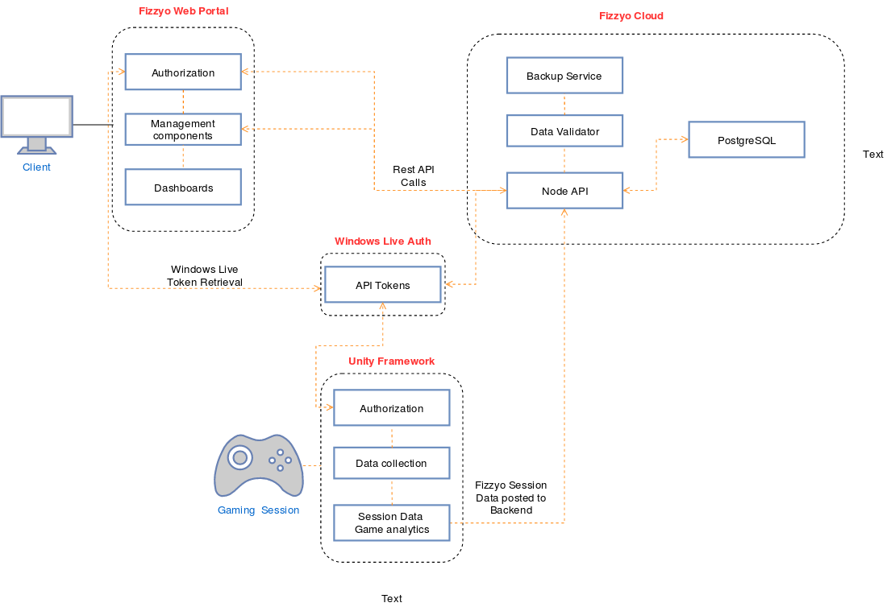

This piece explains the development process of my second year UCL project: Fizzyo. My UCL team consiting of 3 team members picked up the Fizzyo Project from where it was left by the previous UCL team, and together with two other UCL teams, we worked together with our client and partners throughout the year to deliver a good product. Below is our promotional poster, and the whole development process behind Fizzyo!
Professor Eleanor Main is a researcher at the Great Ormond Street Hospital and the UCL Institute of Child Health, where she has been closely involved with physiotherapy research for the previous 22 years. With the goal of improving the way children with CF are treated for in the NHS, she and her team contacted Microsoft to begin works on what became Project Fizzyo. UCL was shortly contacted by Microsoft, and students were given the chance to collaborate in this project. Three sections were split between three UCL teams: data visualisation, game framework and data collection. My team was part of the Game Framework team.
Key Deliverables
Game Developer Web Portal
The existing Fizzyo Web portal lacked the ability of supporting the addition of Fizzyo games to the system. We were tasked with creating a new user role - game developer. He would be able to manage their game details and see analytics for their published game.
Fizzyo Unity Package
We had to finish polishing the existing Unity package, which enables the use of CF treatement devices as videogame controls, as well as the collection of data from it.
Fizzyo Unity Developer Guide
The Microsoft Team let us know they planned the development of Fizzyo games to begin ASAP, and for this they asked our team to develop a user guide / tutorial for future developers.
Requirement Gathering
As part of our development process, our team held various meeting with the client and the Microsoft team at the start of the project to build a concise list of requirements. In addition to this, our team built various personas and storyboards, which we presented to the partners and received feedback on. Some of these are available below.
Shortly after this milestone, we designed a Gantt Chart in the "sprints" format to make clear the progress of our team to the other UCL teams, Microsoft partners and our client; as all components of the project are closely related and some teams cant begin work on some features without the work of other teams. This proved to be effective in order to not fall behind and be improve intra-team communication.
To start off, we first did an User Survey in order to better understand our users' preferences and backgrounds. We contacted a game development team from Imperial College London, named Tower Block F.
After discussing our requirements with them, they have agreed with the overall concept of the platform, and made some suggestions. Together with our own ideas, we compiled a list of questions which we added to a survey. We provided the survey to various CS students to complete. (I dont have access to the original survey results so I only have this image from the files I could find sorry!)
Web Portal Design
When designing the Web Portal, different team members did some rough sketches in pen and paper portraying some features we needed to add (e.g dashboard, game management).
From here we moved over to creating an actual web prototype in order to evaluate how well this design would work. The prototype was quickly built thanks to the Google Sites platform, and we performed some evaluation testing on some of our classmates and got feedback from them. You can find the example prototype here. For evaluation, we gave our test subjects two tasks:
Navigate through the site and give their thoughts out loud.
Have the user add a game to the system.
Below we find the main takeaway from our evaluation project:
Problem ID
Description
Heuristic
Solution
Severity
1
User needs to scroll down to see further down the page
User control and freedom
In addition to separating pages, add navigation bar to visit desired page
3
2
All components are in a single page, too much information
Aesthetics and minimalist design
Single page format divided into individual pages and subpages
2
3
Page divider has similar colour and font, not obvious which section the user is currently at
Aesthetics and minimalist design
In addition to separating pages, add navigation arrows to switch between pages
1
4
System does not indicate whether the change was successful or not
The system design was of vital importance, as we had to properly communicate with the various systems already in place and make sure our codebase and choice are all scalable and easy to develop on for future programmers. I believe the whole breakdown of the choice of technologies is beyond the scope of this article (as its mainly UX HCI based), so I will just say that for web technologies, we worked with NodeJS, ReactJS and PostgreSQL mainly due to the ease of scalability and efficiency of building dynamic websites. The Unity Package is obviously based on Unity, and for the documentation we utilized the Microsoft tool DocFX, which we setup with a Virtual Machine server to quickly generate documentation from triple slash comments in our unity code.
We carefully planned the interaction between all of these components and made a diagram to illustrate this:

We also did two diagrams for our web application, a class diagram and a sequence diagram, to help with our implementation process:
Finally, we decided to follow various design patterns and web paradigms, to make this project future-proof!
Singleton Pattern
MVC Pattern
Builder Pattern
Strategy Pattern
Separation of Concerns
Chain of responsability
I have opted to skip the explanaiton of these as again, its out of scope for this article. However, feel free to read the explanaiton about them here.
Deliverables and Closing Thoughts
Once the end of the year came, we managed to deliver a great product and both UCL and our clients were very happy about the result. The Unity Framework and its documentation was a success, and many students were capable of quickly making games for children to play during their CF treatement. Additionally, we managed to fully integrate our version of the web portal with the existing version, which was one of the more concerning areas for our project. It is save to say we managed to perform to a very high standard and it was a very exciting project and I was glad I was given the chance to work in something like this as a student!

{kind=link}
{kind=link}
{kind=link}
{kind=link}
{kind=link}
{kind=link}
{kind=link}
{kind=link}
{kind=link}
{kind=link}
{kind=link}
{kind=link}
{kind=link}
{kind=link}
{kind=link}
{kind=link}